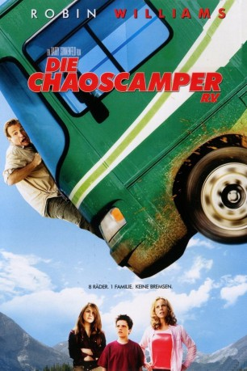

#6803 Die Chaoscamper
Alternativ: RV
 
 IMDB-Wertung: 5.5 / 10
IMDB-Wertung: 5.5 / 10  Metascore: 0
Metascore: 0 
Die Familie Munro macht sich in den Familienurlaub und in den damit endlich erhofften Familienfrieden auf. Doch Papa Bob führt seine Familie nicht wie versprochen nach Hawaii, sondern mit dem Campingbus auf Tour nach Colorado, wo alles schief geht, was nur schief gehen kann. Als die Familie dann auch noch auf die perfekte Familie Gornicke stößt, gerät alles ins Wanken.
Jahr: 2006
Dauer: 98 Minuten
FSK: 0
Land: England Studio: Sony Pictures ReleasingTonspuren: DD5.1 - ,
Untertitel:
Auflösung: 1080p (1920x800) Größe: 7413 MB
Genre: Komödie, Abenteuer, Familie
Regisseur:  Barry Sonnenfeld
Barry Sonnenfeld
Drehbuch: Geoff Rodkey
Soundtrack:
Darsteller:
Datei: X:\2006(A-F)\Chaoscamper, Die (2006, FSK0, 1920x800).mkv seit 30.08.2017
Festplatte: HD 2005(G-Z)-2006(A-Z)
 Es gibt insgesamt 56 Filme in der Gruppe '2006(A-F)'
Es gibt insgesamt 56 Filme in der Gruppe '2006(A-F)'